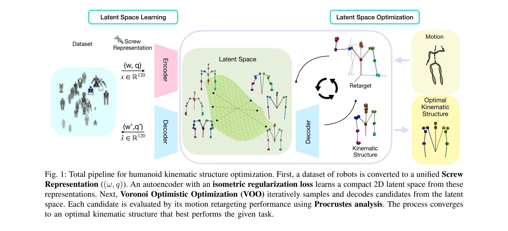
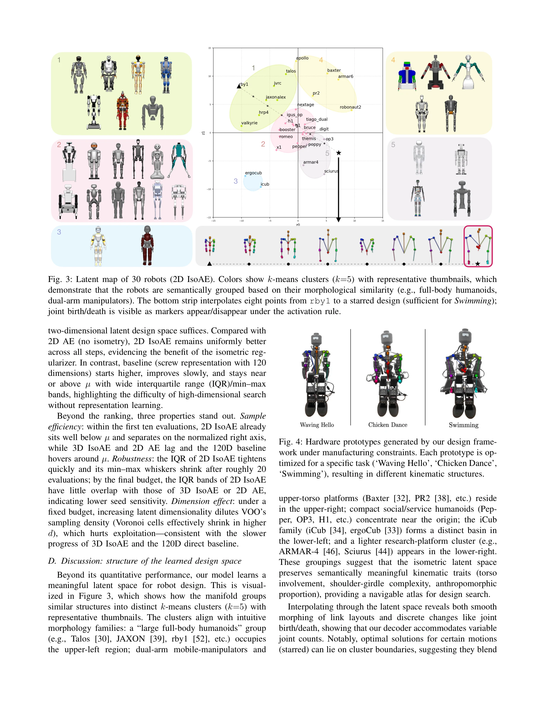

저자: Jihwan Yoon, Taemoon Jeong, Jeongeun Park, Chanwoo Kim, Jaewoon Kwon, Yonghyeon Lee, Kyungjae Lee, Sungjoon Choi | 날짜: 2026-04-09 | DOI: 10.48550/arXiv.2604.08636

Fig. 1: Total pipeline for humanoid kinematic structure optimization. First, a dataset of robots is converted to a unifi
LEGO는 기존 로봇 설계 데이터와 인간 모션 데이터를 활용하여 humanoid 로봇의 kinematic 구조를 자동으로 최적화하는 데이터 기반 설계 프레임워크이다. Screw theory 기반 표현과 isometric manifold learning을 통해 compact한 latent space를 구성하고 gradient-free optimization으로 최적 설계를 탐색한다.

Fig. 4: Hardware prototypes generated by our design frame-
Fig. 1: Total pipeline for humanoid kinematic structure optimization. First, a dataset of robots is converted to a unifi
총평: 본 논문은 screw theory, isometric manifold learning, motion retargeting을 통합한 혁신적인 data-driven 로봇 설계 프레임워크를 제시하며, 실제 하드웨어 프로토타입 검증으로 실용성을 입증한 의미 있는 연구이다. 다만 제한된 학습 데이터와 특정 morphology에의 국한이 일반화 관점에서의 한계이나, 로봇 설계 자동화 분야에 중요한 기여를 제공한다.